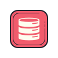

Moïse
PERRAS
Étudiant Master Informatique @ Paris Saclay.
Je conçois et administre une infrastructure complète : cluster Proxmox,
SSO Keycloak, monitoring Grafana, Nextcloud, réseau Headscale.
Sur mon HomeLab.
À propos
Qui suis-je ?
Je suis un ingénieur Data & DevOps qui aime concevoir des systèmes robustes, des pipelines de données fiables et des infrastructures qui tiennent la route en production. Mon terrain de jeu : Python, SQL, Proxmox, Ansible, Docker et les stacks Big Data.
Actuellement en Master Informatique à l'Université Paris Saclay, je travaille sur des projets concrets: pipelines ETL, dashboards analytiques, automatisation d'infrastructures. Pour consolider mes compétences techniques et ma compréhension des besoins métiers.
Ce qui me motive : construire des infrastructures et des flux de données qui durent, avec une documentation soignée, des pratiques DevOps solides et une vraie culture de l'observabilité.


Infrastructure
Architecture du Lab
Un cluster proxmox(deux noeuds), une quinzaine de conteneurs LXC, exposés via un VPS public grâce à un réseau privé Headscale.
Visite guidée
Explorez l'infrastructure
Chaque étape vous fait traverser une couche réelle de l'architecture. Des crédentiels de démo sont fournis, suivez l'ordre pour vivre le parcours complet.
Toute l'infrastructure est protégée par un SSO Keycloak fédéré avec OpenLDAP. Un seul compte vous donne accès à tous les services. Connectez-vous avec le compte visiteur. Vous verrez le token JWT être émis et réutilisé sur les étapes suivantes.
InfluxDB collecte les métriques de chaque LXC toutes les 30 secondes. Le dashboard affiche CPU, RAM, disk I/O et réseau en temps réel pour l'ensemble du cluster. Vous voyez l'état exact de la machine que vous êtes en train d'utiliser.
Ouvrir GrafanaNextcloud tourne en LXC avec PostgreSQL comme base de données backend. Un dossier "Visiteurs" est accessible en lecture. Schémas d'architecture, configs anonymisées et notes techniques. L'authentification passe par le SSO Keycloak.
Ouvrir NextcloudLe wiki documente chaque service : procédures d'installation, choix techniques, runbooks de dépannage. C'est ici que je regarde en premier si un service tombe à 3h du matin. Accessible en lecture.
Ouvrir le WikiLe Jumpserver centralise tous les accès SSH aux machines du cluster avec enregistrement des sessions, gestion des permissions par rôle et MFA. En démonstration : accès à l'interface en lecture seule, sans exécution de commandes.
Ouvrir JumpserverToute l'infrastructure est administrée via Ansible, orchestré par Semaphore. Des jobs automatisés gèrent la mise à jour des paquets et le déploiement de configurations sur les LXC. Cliquez pour voir l'état des derniers déploiements.
Voir les scriptsCompétences
Stack Technique



Réalisations
Projets
Des projets techniques concrets, de l'infrastructure bare-metal aux pipelines de données.
Cluster Proxmox HA à 2 nœuds hébergeant une quinzaine de services LXC en production. Réseau mesh WireGuard via Headscale, SSO Keycloak fédéré avec OpenLDAP, monitoring Grafana/InfluxDB et backups automatisés via PBS.
Pipeline d'ingestion et de transformation de données avec Apache NiFi pour la collecte, DBT Core pour les transformations SQL et Power BI pour la restitution. Architecture orientée qualité des données avec tests automatisés à chaque étape.
Mise en place d'une chaîne CI/CD complète avec GitLab CI/CD et Jenkins pour le déploiement automatisé des services du lab. Provisionnement des LXC via Ansible avec gestion des rôles, des templates et des variables d'environnement.
Architecture de traitement de données en temps réel avec Apache Kafka. Ingestion de flux d'événements, transformation à la volée et stockage dans un entrepôt analytique. Projet réalisé dans le cadre du Master Informatique Décisionnelle.
Contact
Discutons
Je cherche un CDI à partir de septembre 2026, idéalement en data engineering ou DevOps.
Ou contactez-moi directement :